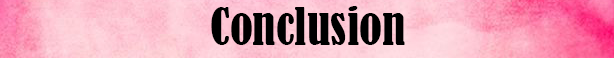
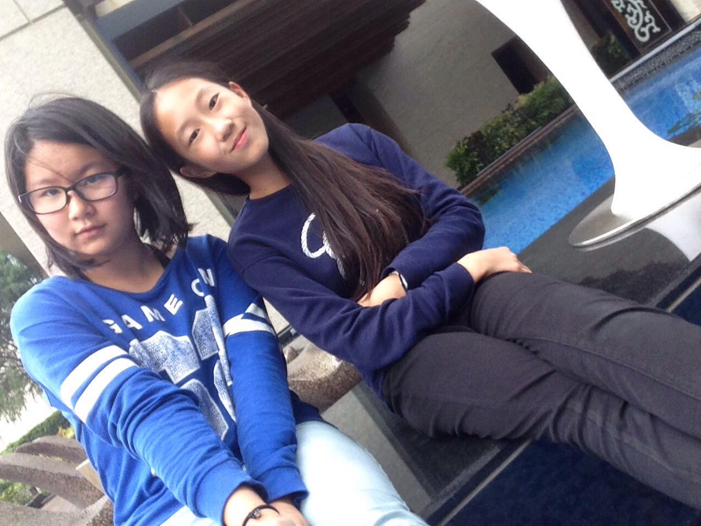

|
|  |

WHY WE MADE THIS WEBSITE

We are middle school students from KAS. This website is made in a purpose of our coding class. However, we chose a topic that we think is a really important theme and a conflict we all need to fix. We researched and learned a lot about the ecosystem. We realised what horrible things humans are doing in a place we all share to live. It is a very important role for us to keep the ecosystem healthy. Even though we are just a middle school student, we see a perspective of the world that sometimes adult can’t see. We hope you can learn and understand about the ecosystem a little better and try to make things a little better for all of us.